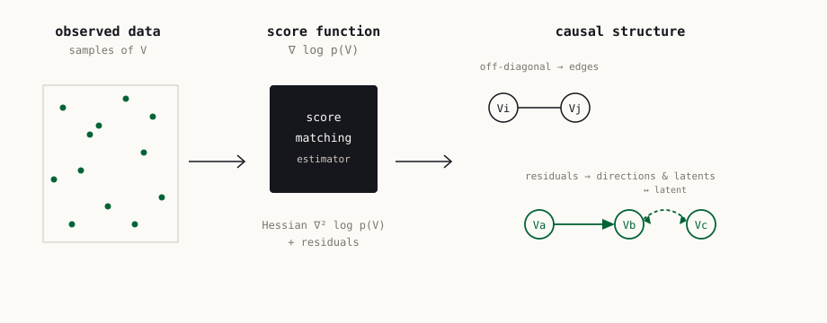

Score matching through the roof: linear, nonlinear, and latent variables causal discovery
Causal discovery from observational data holds great promise, but existing methods rely on strong assumptions about the underlying causal structure, often requiring full observability of all relevant variables. This work leverages the score function ∇ log p(X) of the observed variables for causal discovery. First, it fine-tunes existing identifiability results for additive noise models, showing that the assumption of nonlinear causal mechanisms is not necessary. Second, it establishes conditions for inferring causal relations from the score even in the presence of hidden variables: the score can recover the equivalence class of causal graphs with latent variables (whereas prior results are restricted to the fully observable setting), and sufficient conditions are given for identifying direct causes in latent variable models. These insights yield AdaScore, a flexible algorithm for causal discovery on linear, nonlinear, and latent variable models, validated empirically.
Introduction
Inferring causal relations from observational data is a central goal across the sciences, but the methods that do it cleanly are hemmed in by assumptions (Peters et al. 2017; Pearl 2009). Constraint-based methods such as PC and GES are broadly applicable but recover only an equivalence class (Spirtes et al. 2000; Chickering 2003); pinning down a unique causal order requires extra structural assumptions on the mechanisms generating each effect from its causes (Shimizu et al. 2006; Hoyer et al. 2008; Peters et al. 2014), which are often untestable in practice.
A second, sharper limitation is the assumption that every relevant cause is observed. When latent variables are present, the available relaxations come at a cost: FCI returns only an equivalence class (Spirtes 2001), while methods that identify some direct effects under hidden confounding lean on strong mechanism assumptions — RCD on a linear non-Gaussian model (Maeda and Shimizu 2020), and CAM-UV on nonlinear additive mechanisms (Maeda and Shimizu 2021).
This paper works in a recent line connecting the score function \nabla \log p(X) of the data distribution to the causal graph (Rolland et al. 2022; Montagna, Noceti, et al. 2023b, 2023a). The score is appealing for causal discovery because it scales to higher-dimensional graphs and admits finite-sample guarantees.1 Rather than committing to one set of mechanism assumptions, the authors map out different levels of identifiability as a function of how strong the modeling hypotheses are, always reading causal information off the score.
1 The authors restrict to additive noise models for the identifiability of directions; the equivalence-class results hold more generally, since they follow from vanishing cross-partials of the log-density without assuming a particular generative model.
The contributions are: (i) sufficient conditions for identifying direct causal effects from the score in latent variable models, and (ii) AdaScore (Adaptive Score-matching-based causal discovery), an algorithm that — depending on which modeling assumptions the user is willing to make — outputs a Markov equivalence class, a directed acyclic graph (DAG), or a mixed graph that accounts for unobserved variables.
From the score to the graph
The observed variables V follow a structural causal model in which each variable is a function of its parents, possibly some latent parents U^i, and an independent noise term: V_i := f_i(V_{\mathrm{PA}_i}) + g_i(U^i) + N_i, \qquad i = 1, \dots, d. Marginalizing the underlying DAG onto the observed nodes V yields a maximal ancestral graph (MAG), whose equivalence class is summarized by a partial ancestral graph (PAG) — the most one can hope to recover without further mechanism assumptions.

Skeleton from the Hessian. Building on a result of Spantini et al. (2018) (and earlier Lin (1997)), the paper shows that for variables generated by this model, a vanishing cross-partial derivative of the log-density is equivalent to a conditional (m-)separation in the marginal graph: \frac{\partial^2}{\partial V_i\, \partial V_j} \log p(V_Z) = 0 \;\;\Longleftrightarrow\;\; V_i \perp_m V_j \mid V_Z \setminus \{V_i, V_j\}. This makes the Hessian of the log-density a constraint-based test of graphical separation — usable, in the spirit of FCI, to recover the equivalence class of the marginal graph even when latent variables are present (Spantini et al. 2018).
Nonlinearity is not needed. In the fully observable case, the authors revisit the sink-finding idea behind NoGAM (Montagna, Noceti, et al. 2023a). For a sink node the score component reduces to a function of that node’s own noise term, which can be recovered from the regression residual R_i := V_i - \mathbb{E}[V_i \mid V_{\setminus i}]. They prove a node is a sink exactly when its residual perfectly predicts its score component (a vanishing mean-squared error). Crucially, this holds for any restricted additive noise model — the earlier requirement that the mechanisms be nonlinear is dropped, so linear and nonlinear mechanisms are handled by the same condition (Montagna, Noceti, et al. 2023a).
Directions and direct causes under latents. The paper’s main theoretical step extends this to hidden variables. Writing the latent contribution into a recentered noise term \tilde N_i := g_i(U^i) + N_i turns the model back into an additive noise model on the observed variables, and the score can then identify a direct causal effect between two adjacent observed nodes — an effect that conditional-independence testing alone (e.g. FCI) cannot detect. When the mechanisms are nonlinear, direct parents in the DAG are identifiable; in the linear case identifiability is limited to ancestorship relations.
AdaScore
AdaScore turns these results into an algorithm that adapts to the assumptions a user is willing to make. Running the full FCI adjacency search and then orienting every neighborhood would be prohibitively expensive, so AdaScore instead works iteratively: it first looks for a sink not affected by latents (in the spirit of NoGAM), orienting that sink’s adjacent edges toward it; if no such sink exists it picks a node, finds its neighbors via the Hessian condition, and orients its edges using the residual condition. In its best case the procedure is polynomial in the number of nodes. Depending on the regime, the output is a Markov equivalence class, a DAG, or a mixed graph.
What makes AdaScore distinctive is the breadth of models it covers with guarantees. The table below — reported verbatim from the paper — marks, for each method, whether it has identifiability guarantees under a given modeling condition. AdaScore is the only entry with a guarantee in every row.
| Identifiability condition | CAM-UV | RCD | NoGAM | DirectLiNGAM | AdaScore |
|---|---|---|---|---|---|
| Linear additive noise model | ✗ | ✓ | ✗ | ✓ | ✓ |
| Nonlinear additive noise model | ✗ | ✗ | ✓ | ✗ | ✓ |
| Nonlinear CAM | ✓ | ✗ | ✓ | ✗ | ✓ |
| Latent variables effects | ✓ | ✓ | ✗ | ✗ | ✓ |
| Output | Mixed | Mixed | DAG | DAG | Mixed |
Experiments
The empirical study uses the causally library (Montagna, Mastakouri, et al. 2023) to generate Erdős–Rényi synthetic graphs — sparse and dense, with edge probability 0.3 and 0.5 respectively — under linear and nonlinear additive-noise mechanisms, with nonlinear functions parametrized by random-weight neural networks and noise drawn uniformly on [-2, 2]. Hidden variables are introduced by dropping two columns of the data matrix. Synthetic experiments use graphs of up to 9 nodes (AdaScore and CAM-UV were observed not to scale beyond this), 1000 observations per dataset, 20 random seeds, and a hypothesis-test level of 0.05. Accuracy is measured by structural Hamming distance (SHD, lower is better), counting missing and misdirected edges as errors. AdaScore is compared against NoGAM, CAM-UV, RCD, DirectLiNGAM, and a random baseline.
Three real and pseudo-real benchmarks are also used: a cell-signaling dataset (Sachs et al. 2005), the AutoMPG fuel-consumption dataset (Bache and Lichman 2013) with the causal ground truth of Wang and Mueller (2017), and the synthetic Sim2 FMRI dataset (Smith et al. 2011); for each, two variables are dropped to introduce hidden confounding, over 20 repetitions. For Sachs and Sim2, 1000 samples are randomly selected (the AutoMPG dataset is used in full).
The reported picture is one of robustness rather than dominance. On fully observable models, AdaScore is comparable to the other benchmarks on linear data (except DirectLiNGAM), and on nonlinear data it outperforms RCD while being slightly behind CAM-UV and NoGAM. Under latent confounding, AdaScore is comparable to CAM-UV and NoGAM and preferable to RCD, which degrades with scale and is no better than random at 9 nodes. On the real benchmarks, AdaScore has the lowest SHD among all tested methods on the cell-signaling data and stays competitive on the fuel-consumption and FMRI data.
The authors are explicit that AdaScore “does not clearly outperform the existing baselines” on the synthetic benchmark. The contribution is the theory: broad identifiability guarantees across linear, nonlinear, and latent-variable models that, taken together, are not matched by any single existing method — which is what makes the approach attractive for realistic settings where the true structural assumptions are unknown.
Conclusion
The paper formalizes and extends the connection between score matching and structure learning in two directions: it removes the nonlinearity requirement for identifiability in additive noise models, and it shows that the score retains causal information even under unobserved variables — enough to recover the Markov equivalence class and, with additional assumptions, individual direct causes. AdaScore packages these results into an algorithm whose guarantees adapt to the user’s modeling hypotheses. A natural next step the authors highlight is extending the theory toward local causal discovery. Full references appear in the margin and below; a copyable BibTeX entry for this paper is generated automatically.
Citation
@inproceedings{montagna2024,
author = {Montagna, Francesco and M. Faller, Philipp and Blöbaum,
Patrick and Kirschbaum, Elke and Locatello, Francesco},
title = {Score Matching Through the Roof: Linear, Nonlinear, and
Latent Variables Causal Discovery},
booktitle = {4th Conference on Causal Learning and Reasoning (CLeaR)},
date = {2024-07-26},
doi = {10.48550/arXiv.2407.18755}
}